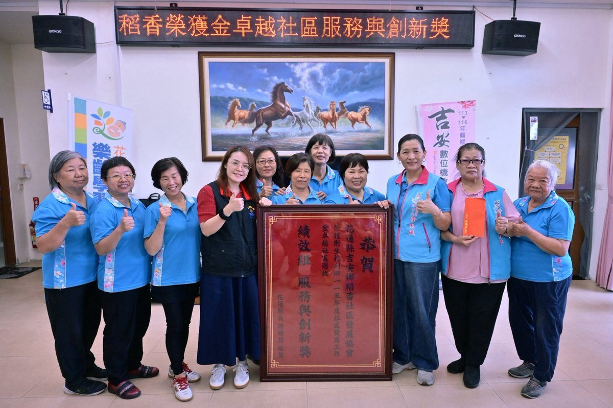

女力翻轉勇奪中央肯定！吉安稻香社區榮獲金卓越「服務與創新獎」 游淑貞偕縣府貼紅榜慶賀

可樂電子報小編/編輯
吉安鄉稻香社區發展協會以女力培力與數位共融成果，自全國競爭中脫穎而出，榮獲衛福部金卓越社區「服務與創新獎」，花蓮縣政府與吉安鄉公所團隊24日下午專程前往張貼紅榜祝賀。

衛生福利部115年度社區發展工作金卓越社區選拔結果出爐，稻香社區在績效組中大放異彩。縣府社會處副處長黃姿華率隊前往慶賀，立委傅崐萁服務處主任陳仲敏、鄉民代表楊靖妍、劉靜文與稻香村長鄧桂英皆到場見證榮耀。社區志工備妥手作綠豆湯、客家麻糬與月餅同歡，現場掌聲與喜氣洋洋。

回顧重生歷程，稻香社區曾於111年陷入組織停滯與活動全面停擺的困境。112年在吉安鄉公所全力輔導下啟動組織重整，由原家政班成員徐淑娥扛起理事長重擔，號召一群「社區媽媽」走出家庭投入公共事務。團隊以婦女賦能為核心軸線，推動跨世代與多元族群共學，成功讓婦女從昔日默默的參與者，蛻變為引領地方向前邁進的核心行動幹部。

在福利社區化推動上，稻香社區結合客庄在地文化與新住民姊妹，深耕「女力傳承・文化共融」等方案；面對超高齡化與科技浪潮，更在113年成功爭取教育部「吉安數位機會中心（DOC）」營運權，將數位載具與智慧應用融入長者照護與文化資產保存，消弭世代數位落差。今年稻香社區接連勇奪吉安鄉評鑑第一名及全縣評鑑優等，此次更上一層樓奪得中央大獎，為吉安基層治理寫下嶄新里程碑。

吉安鄉長游淑貞表示，吉安鄉長期深耕基層福利，七度參與全縣社區評鑑斬獲6次優等與1次甲等殊榮。

「縣、鄉、地方攜手絕對不是口號」，游淑貞特別感謝縣府的指導與全體志工無私奉獻，公所未來將持續厚植各村社區的特色量能，結合民間多元資源，攜手將吉安打造成樂活宜居的幸福模範鄉城。

▶ 延伸觀看
📺 相關報導影片：點此於 YouTube 觀看完整報導